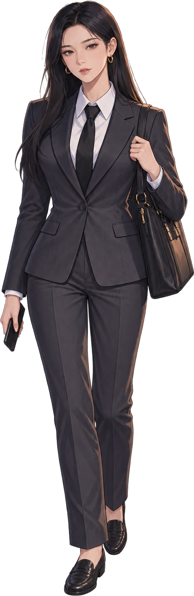
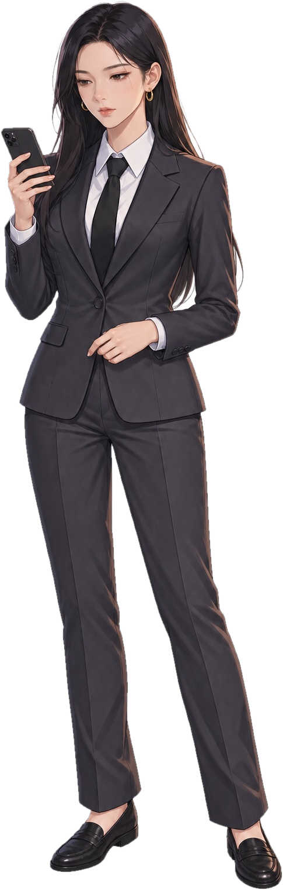
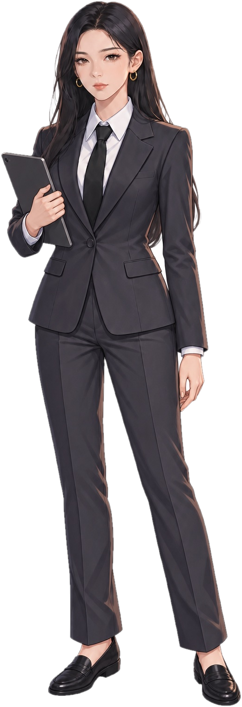

Take a closer look
Recall MORI posts
Recall NOVA posts
Act 1 · Scene A
Back
Restart
Home
⏸
PAUSED — tap or press P to resume
Debbie
L1
▼ Next
SYSTEM · ANSWER SAVED
✕
Posts Debbie scrolled past on her feed this morning
SYSTEM · ROLE UPDATE
ROLE SWITCH
TAP TO CONTINUE ▸
AD MOCKUP
▼ TAP TO CONTINUE
B
Work Chat · BossMessage Boss…
▼ TAP TO CONTINUE
Swipe up for more ▲
🔒 Lock phone
8:15●●● 5G ▮
D更新
Discover
Nearby
🔍
⌂Home
🛍Shop
+
💬Inbox
👤Me
‹